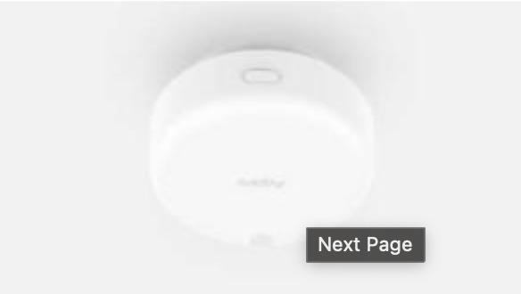
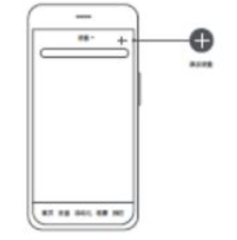
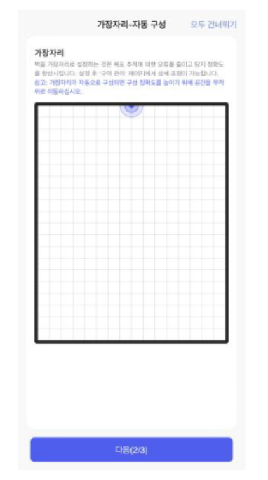
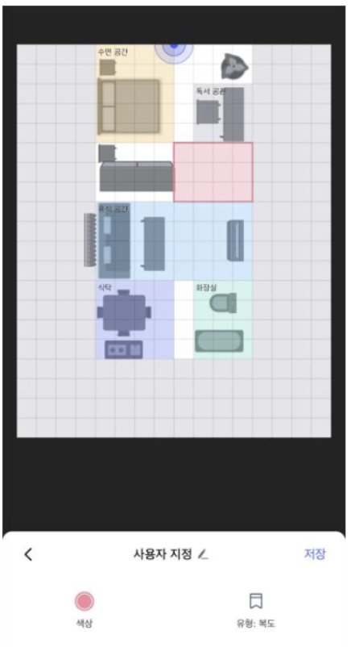
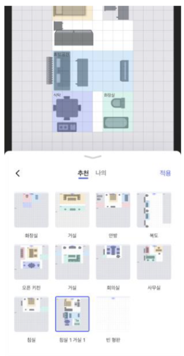
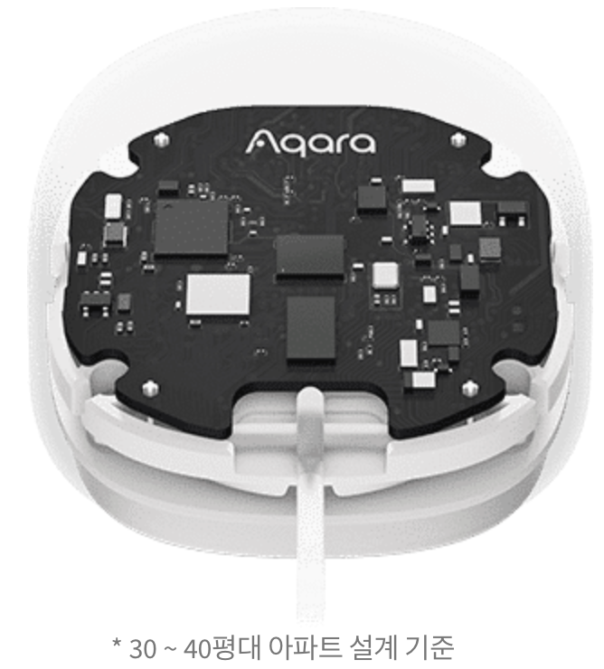
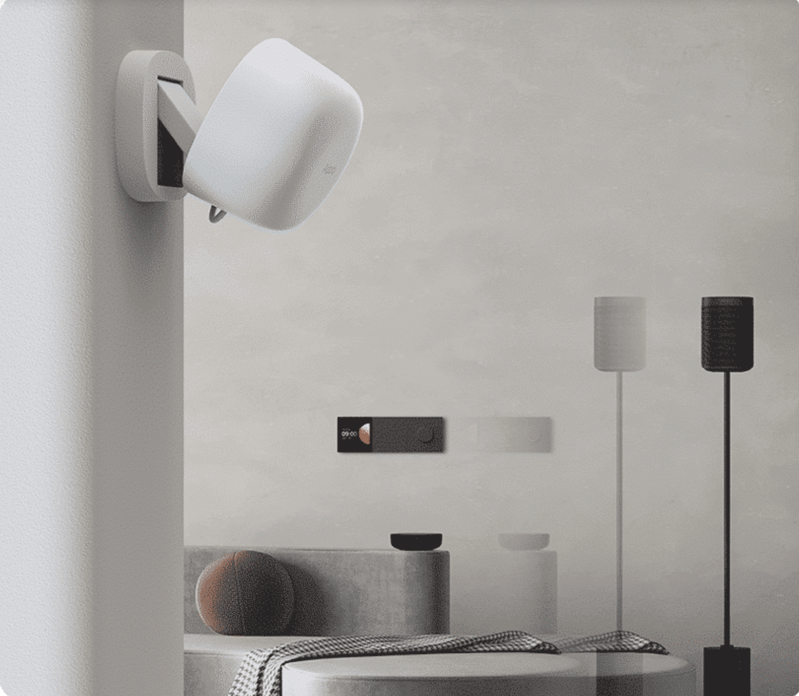
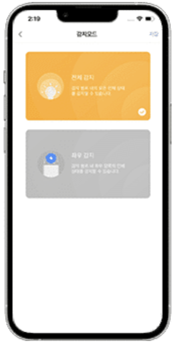

4 재실 감지 센서(FP2/FP1)
4.1 재실 센서 FP2
4.1.1 설치 영상
4.1.2 제품 소개
재실 센서 FP2는 사람의 존재 여부 및 위치와 관련된 다양한 상황을 실시간으로 모니터링하고 이에 따라 자동화를 구현할 수 있도록 하는 제품입니다. 사람이 있는지 없는지에 대한 판단뿐만 아니라 들어오고 나감, 다가오고 멀어짐, 낙상 감지 그리고 조도를 측정할 수 있습니다. 또한 설정한 구역의 모니터링과 다중 타킷의 위치를 실시간으로 추적할 수 있습니다. 또한 설정한 구역의 모니터링과 다중 타킷의 위치를 실시간으로 추적할 수 있습니다. 재실 센서 FP2는 WiFi 통신 방식으로 연결되어 로컬 자옫화를 구현할 수 있고 Apple HomeKit, Google Home등 다양한 3rd Party 플랫폼과 허브 없이 연동하여 사용하실 수 있습니다.
해당 매뉴얼은 Aqara Home 앱에서 사용하는 경우를 기준으로 작성 되었으며, 특정한 기능을 사용하기 위해서는 반드시 Aqara Home 앱을 사용해야 합니다.
로컬 자동화가 필요한 경우 Wi-Fi 로컬 자동화 기능을 지원하는 허브와 함께 사용해야 합니다.
4.1.3 프롬프트
Works with Apple에 배지를 사용한다는 것은 해당 부품이 배지에 명시된 기술과 함께 작동하도록 특별히 설계되었으며 Apple의 성능 표준을 충족하도록 개발자로 부터 인증을 받았으며 Apple은 이 제품의 작동 및 제품이 준수하는 안전 표준에 대해 책임을 지지 않음을 의미한다.
4.1.4 설치
4.1.4.1 설치 방법 선택하기
사용 목적 및 설치 환경에 따라 제품의 설치 방법을 선택해 주세요. 사람의 위치를 측정하고 싶다면 벽면 설치를 추천합니다. 수편 감지 각도가 120도이고 해당 영역을 벗어난 부분은 감지 할 수 없습니다. 최대 감지 거리는 8m, 감지 폭은 6m입니다.

낙상을 감지하고 싶은 경우 천장에 설치하는 방법을 추천합니다. 설치 높이 2.8m 기준, 반지름 2m의 범위 내에서의 넘어짐을 감지 할 수 있습니다.

4.1.4.2 장치 설치 및 전원 연결하기
사용 목적 및 설치 환경에 따라 벽면이나 천장 등 제품을 설치할 위치를 먼저 선택해 주세요. 설치 위치가 2m보다 낮은 경우 동봉된 양면 테이프와 메탈 플레이트를 통해 제품을 설치하고, 설치 높이가 2m 이상인 경우 안전을 위해 나사를 이용하여 설치해 주세요. 제품 박스에 동봉된 Type-C 케이블을 재실 센서 FP2에 연결하고, USB-A 타입의 어댑터에 연결하여 전원을 공급해 주세요. 부팅이 완료된 후 리셋 버튼을 10초가 길게 누르면 장치가 재설정됩니다. 공장 초기 설정으로 복구하려는 경우 리셋 버튼을 빠르게 10번 눌러 주세요.
4.1.4.3 Aqara Home 앱 다운로드
Apple App Store, Google Play등에서 ’Aqara Home’을 검색하거나 아래의 QR 코드를 스캔하여 Aqara Home 앱을 다운로드 하세요.

4.1.4.4 장치 추가
Aqara Home 앱 메인 페이지의 우측 상단 ‘+’ 를 눌러 ‘장치 추가’ 페이지로 이동합니다. ’재실 센서 FP2’를 선택하고 앱의 안내에 따라 장치를 추가합니다.

- HomeKit를 이용하여 장치를 추가하는 경우 앱의 안내에 따라 제품에 부착된 HomeKit 코드를 스캔하거나 PIN 코드를 직접 입력할 수 있습니다.
연결에 실패하는 경우 아래의 사항들을 확인해 주세요.
2.4GHz 대역의 Wi-Fi 네트워크 연결만 가능합니다. 5GHz 대역의 Wi-Fi에 연결되어 있지 않은 지 확인해 주세요.
Wi-Fi 이름 또는 비밀번호에 지원되지 않는 특수문자가 포함된 경우 연결이 불가능할 수 있습니다. 네트워크 이름이나 비밀 번호를 영문과 숫자 조합으로 변경한 후 다시 시도해 주세요.
공유기 설정 중 Wi-Fi 무단 사용 방지 기능이나 AP 격리 기능 등은 연결에 장애를 일으킬 수 있습니다.
WPA/WPA2 Enterprise-class는 현재 지원하지 않습니다.
브리지 네트워크에는 연결하지 않는 것이 좋습니다.
자주 나타나는 HomeKit 연결 실패 메시지는 다음과 같습니다.
“액세서리 추가 실패” 메시지는 반복적인 장치 추가 실패로 인한 캐시 문제로 발생할 수 있습니다.
“액세서리가 이미 존재합니다”라는 메시지가 표시되는 경우 iOS 장치 HomeKit 설정 코드를 수동으로 입력하여 다시 추가해 주세요.
“액세서리를 찾을 수 없습니다”라는 메시지가 표시되는 경우 재실 세선 FP2를 초기화하고 3분 정도 기다리세요. 이후 HomeKit 설정 코드를 수동으로 입력하여 다시 시도해 주세요.
4.1.4.5 장치 카드 및 홈화면 안내
장치를 연결한 후 재실 센서 FP2의 홈 화면에서 장치의 상태를 확인할 수 있습니다. 사람이 있는지 없는지 넘어짐이 있었는지 등의 상태와 조도 데이터를 확인할 수 있습니다. 또한 평면도, 좌표 정보, 구역 관리, 로그, 설치 방법등을 확인할 수 있습니다.
평면도 16 x 20 = 총 320개의 칸으로 구분되며, 각각의 칸은 0.5m x 0.5m = 0.25 제곱미터의 감지 영역을 나타냅니다.

4.1.4.6 설치 가이드
장치를 앱에 처음 연결한 뒤, 앱에서 안내하는 설치 가이드에 따라 동작모드, 가장자리 및 간섭원을 포함한 중요 설정들을 진행할 수 있습니다.
STEP 1. 장치 용도 및 모드 선택.
현재 재실 센서 FP2는 인체 존재 감지, 위치 추적, 낙상 감지 등의 모드를 지원하며, 위치 추적 기능과 낙상 감지 기능은 상호 배타적인 기능으로 한번에 하나만 켤 수 있습니다. 위치 추적 기능을 사용할 때는 장치를 벽면에 설치하고, 낙상 감지 기능을 사용할 때는 장치를 천장에 설치해야 합니다. 사용 목적과 설치 환경에 따라 설치 방법을 결정해 주세요.

STEP 2. 가장자리 설정하기
가장자리 설정은 보다 정확한 위치 추적 기능을 사용하기 위해 가장 중요한 단계입니다. 가장자리가 설정되지 않은 경우 장치가 보내는 신호가 벽에 튕기며 허위 표적을 생성할 가능성이 높아집니다. 가장자리를 설정한 후에는 해당 구역에 표적이 생성되지 않습니다. 가장자리는 매우 광범위하게 사용할 수 있습니다. 반드시 벽면만을 가장자리로 설정할 필요가 없으며, 감지가 되지 않기를 바라는 영역과 오감지를 일으킬 수 있을만한 간섭원 있는 위치도 모두 가장자리로 설정할 수 있습니다. 가장자리는 자동으로 설정할 수도 있습니다. 자동 구성 프로세서 중 사용자가 공가 주위를 무작위로 이동하면 이를 판단해 가장자리를 구성합니다. 해당 기능은 보조적인 용도로 사용하는 것을 권장하며, 자동 구성 이후 사용자가 실제 환경에 맞게 세부적으로 조정하여 사용하는 것을 권장합니다.

STEP 3. 간섭원 설정하기
커튼, 선풍기, 에어컨, 화분 등과 같이 움직이는 모든 물체는 재실 센서 FP2의 정확도에 영향을 미치는 간섭원이 될 수 있습니다. 모니터링의 정확성을 향상시키기 위해 간섭원을 사전에 설정하는 것이 중요합니다. 재실 센서 FP2는 간섭원을 필터링하는 학습기능이 있으며, 사용자가 간섭원을 직접 설정할수도 있습니다. 또한 간섭원 자동 구성 기능을 지원합니다. 해당 과정을 진행할 경우 공간내의 마이크로 모션 신호를 분석하고 앱 인터페이스에 표시합니다. 자동 구성을 완료한 후 실제 환경에 따라 간섭원을 추가로 편집할 수 있습니다.
사람과 반려동물 등 유기체가 공간에 없는 상태에서 자동 구성을 진행해 주세요.
간섭원을 구성하기 전에 가장자리를 먼저 구성하는 것이 좋으며, 가장자리로 설정한 영역에 있는 간섭원은 간섭원으로 재지정할 필요 없이 가장자리인 상태로 두어도 올바로 설정이 완료됩니다.

4.1.4.7 편집 구역
Aqara Home 앱에서 관리 구역을 선택하여 탬플릿, 스티커, 모니터링 영역 및 기타 영역 설정을 포함한 편집 인터페이스로 들어갈 수 있습니다. 인터페이스에서 설정된 영역을 길게 눌러 모니터링 또는 기타 영역을 직접 편집 할 수 있습니다. 스티커 또는 템플릿 항목을 클릭해 해당 설정 페이지로 들어 갈 수 있습니다.

4.1.4.8 모니터링 구역
재실 센서 FP2는 최대 30개의 모니터링 구역 설정을 지원합니다. 한 손가락으로 드래그하여 구역을 설정하고, 두 손가락으로 중심을 이동하거나 확대 축소할 수 있습니다. 각 구역은 이름, 색상 선택 및 유형 선택으로 구분할 수 있습니다.
모니터링 구역이 설정되면 감지 구역 내 자동 실행 옵션을 설정할 수 있습니다.
모니터링 구역이 설정된 후 재실 센서 FP2를 Apple Home에 추가하면 자동으로 Apple Home과 구역 이름이 동기화 되며 Aqara Home의 추가 설정에서 이름 동기화를 실행하면 구역 이름을 Apple Home과 동기화 할 수 있습니다.
유형 선택은 재실 센서 FP2가 모니터링 구역의 변수를 더 잘 조정하여 가장 적합한 식별 효과를 제공하는 데 도움이 될 수 있습니다.

4.1.4.9 스티커
스티커를 활용하여 사용하는 공간을 직관적으로 시각화 할 수 있습니다. 16가지의 스티커 유형을 제공하며 사용자당 최대 20개의 스티커를 사용할 수 있습니다. 각 스티커는 선택, 확대, 축소, 삭제 등이 가능하며 좌측 하단의 회전 버튼을 누르거나 드래그하여 회전시킬 수도 있습니다.

4.1.4.10 기타 구역
기타 구역은 자동 실행의 트리거로 사용할 수는 없지만 재시 센서 FP2의 정확도에 영향을 미치는 중요한 요소입니다. 출입구, 가장자리, 간섭원을 포함한 입구, 출구, 창문, 복도 등 사람들이 자주 나타나거나 사라지는 장소를 기타 구역으로 설정할 수 있습니다. 입구와 출구를 설정하면 명확한 조건으로 인해 타킷이 더 빨리 생성되고 삭제됩니다. 따라서 보다 정확한 출입 결정을 위해 입구와 출구 영역을 실제 문의 영역 보다 더 크게 설정하는 것이 좋습니다. 가장자리 및 간섭원 설정은 장치의 정확도를 위해 매우 중요한 요소이며, 해당 영역에서는 타킷이 생성되지 않습니다. 기타 자세한 내용은 참고해 주세요.

4.1.4.11 템플릿
구역 설정 페이지의 우측 상단 모서리의 버튼을 클릭하여 설정한 레이아웃을 템플릿으로 저장할 수 있습니다. 템플릿은 모니터링 구역, 스티커, 기타 구역 등을 포함하여 저장할 수 있으며, 반복적인 설정 작없 없이 다른 공간에 해당 템플릿을 복사하여 사용할 수 있습니다.

좌측 하단의 템플릿을 선택하면 추천 템플릿과 개인 템플릿을 가져 올 수 있으며, 추천 템플릿은 미리 보기와 가져오기를 지원하고 개인 템플릿은 이름 변경 및 삭제를 지원합니다.
현재 11개의 추천 템플릿이 있으며 사용자는 추천 템플릿을 가져오기 한 후 실제 환경에 맞게 편집 할 수 있습니다. 추천 템플릿 중 빈 템플릿을 사용하는 경우 모든 구역을 삭제하게 됩니다.
템플릿을 적용하면 기존에 설정한 구성이 삭제되므로 저장에 유의하세요.
모니터링 구역에 대한 자동화는 저장 및 불러오기가 불가합니다.
개인 템플릿은 개인 계정에 저장되며, 계정내 모든 재실 센서 FP2에서 사용할 수 있습니다.

4.1.4.12 추가 설정

FP2에서 지원하는 추가 설정은 다음과 같습니다.
(1) 빛 간섭 방지 모드
해당 모드를 활성화하는 경우 보호 및 오프라인과 같은 알림을 포함하여 지정된 시간 동안 지시등이 완전히 꺼집니다.
- 네트워크 재설정 알림은 해당 설정에 영향받 지 않습니다.
(2) 동작 모드
존재 감지, 위치 추적 및 낙상 감지를 설정할 수 있으며, 존재 감지 모드는 기본적으로 활성화되어 있습니다. 현재 위치 추적 모드와 낙상 감지 모드는 동시에 사용할 수 없으며 향후 더욱 다양한 동작 모드를 지원할 예정입니다. 위치 추적 기능에는 좌표 방향 반전 및 감지 방향 설정이 있습니다. 좌표 방향 반전은 센서의 설치 방향에 따라 설정할 수 있으며 자동 설정을 지원합니다. 자동 모드에서 재실 센서 FP2는 장치의 설치 방향을 자동으로 인식하고 이에 따라 좌표를 나타냅니다. 감지 방향 기능은 전체 감지, 좌우 모니터링으로 구분되며 좌우 모니터링을 선택하면 왼쪽, 오른쪽 등 인체의 이동 방향을 감지할 수 있습니다.
(3) 모니터링 감도
모니터링 감도는 장치의 응답 속도와 정확도에 영향을 미칩니다. 민감도가 높을수록 응답은 빠르지만 오감지가 발생할 확률도 높아집니다. 침실, 소파 등 비교적 정적인 지역에서는 고감도, 통로, 복도 등 이동이 많은 지역에서는 저감도를 사용하는 것을 추천합니다.
(4) 근접 감지 거리
해당 설정은 센서 자체 또는 모니터링 구역을 기준으로 인체의 근접 감지 거리에 대한 기준을 변경합니다. 각각 1m,2m,3m의 값에 해당하는 낮음, 중간 및 높음 3단계로 설정할 수 있습니다. 예를 들어 중간으로 설정하면 센서 또는 설정 구역에서 2미터 떨어진 지점을 기준으로 인체의 접근 또는 멀어짐을 모니터링합니다.
(5) 낙상 모니터링 감도
낙상 모니터링 감도는 낙상의 오감지율에 영향을 미칠 수 있습니다. 민감도가 높을수록 더 많은 유형의 낙상을 식별 할 수 있지만, 천천히 앉는 것과 같은 특정 오감지 가능성이 높아집니다.
(6) 사람 없음 상태로 초기화
재실 상태에 대한 오감지가 있을 경우 해당 기능을 통해 공간의 현재 상태를 없음으로 변경할 수 있습니다.
(7) 이름 동기화
해당기능을 통해 설정된 모니터링 구역을 Apple Home에 동기화 할 수 있습니다.
4.1.4.13 자동화
자동화 조건
| 자동화 이름 | 정의 | 설명 |
|---|---|---|
| 유인 | 유인 감지됨 | 상태 |
| 무인 | 아무도 감지되지 않음 | 상태, 유인에서 무인으로 일반적으로 6-30s의 연속 감지가 필요 |
| 사람이 있고 일정 시간 이상 | 기간 범위: 1초 ~ 23시간 59분 59초 기본값: 10분 |
상태 |
| 무인 상태이고 일정 시간 이상 | 기간 범위:1초 ~ 23시간 59분 59초 기본값: 10분 |
상태 |
| 들어가다 | 누군가 감지되었다 | 일시적, 첫번째 사람에게만 효과적이며, 왼쪽 및 오른쪽 전진은 왼쪽 및 오른쪽 모니터링 모드에서 구별된다. 전역적으로만 적용되며 지역은 왼쪽 및 오른쪽 입력 이벤트를 보고하지 않는다. |
| 떠나다 | 누군가 떠나는 것이 감지되었다 | 일시적, 마지막 사람에게만 효과적이며, 왼쪽 및 오른쪽 아웃은 왼쪽 및 오른쪽 모니터링 모드에서 왼쪽과 오른쪽으로 구별된다. 전 세계적으로만 유효하며 이 지역은 왼쪽 및 오른쪽 출발 이벤트를 보고하지 않는다. |
| 왼쪽 앞으로 | 왼쪽에서 누군가가 들어오는 것이 감지되었다. | 일시적 |
| 왼쪽 | 누군가 왼쪽에서 떠나는 것이 감지 되었다. | 일시적 |
| 오른쪽으로 이동 | 오른쪽에서 누군가가 들어오는 것이 감지되었다. | 일시적 |
| 바로 밖으로 | 누군가 오른쪽에서 떠나는 것이 감지 되었다. | 일시적 |
| 접근 | 근접 감지 거리에는 원거리, 중간 및 근거리의 3가지 수준이 있다. 기본값: 중간 |
일시적, 글로벌 및 지역적 근접 이벤ㅌ 이 임계값에 접근하는 모든 대상은 근접 이벤트를 보고한다. |
| 교묘한 | 근접 감지 거리에는 원거리, 중간 및 근거리의 3가지 수준이 있다. 기본값: 중간 |
일시적, 글로벌 및 지역적, 이벤트에서 벗어날 수 있다. 이 임계값에서 벗어나는 사람은 누구나 멀리 떨어진 이벤트를 보고한다. |
| 누군가 쓰러졌다 | 사용자가 넘어지는 것이 감지된다. | 일시적 |
| 누군가 일정 시간 동안 넘어진다, | 가을 상태는 일정 시간 동안 지속된다. | 상태 |
| 조도 | 조도가 낮은 값에서 지정된 값으로 상승할 때 | 일시적 |
| 조도 | 조도가 낮은 값에서 지정된 값으로 떨어질 때 | 일시적 |
| 지정 조도 위 | 조도가 지정된 값보다 클 때 | 상태 |
| 지정 조도 아래 | 조도가 지정된 값보다 작을 때 | 상태 |
| 이 지역은 비어 있으며 일정 시간 이상 주변에 있었다. | 기간 범위: 1초 ~ 23 시간 59분 59초 기본값: 10분 |
상태 |
| 영역이 채워지고 일정 시간보다 길다. | 시간 범위: 1초 ~ 23시간 59분 59초 기본값: 10분 |
상태 |
| 이 지역에는 사람들이 있다. | 해당 지역에서 사람이 감지 되었다. | 상태 |
| 이 지역은 비어 있다 | 해당 지역에서 아무도 발견되지 않았다. | 상태 |
| 지역 입력 | 누군가 설정 영역에 들어가는 것이 감지되었다. | 일시적, 해당 지역의 첫 번째 사람에게 유효한다. |
| 지역을 떠나십시오 | 설정 영역을 떠나는 사람이 감지되었다. | 일시적, 해당 지역의 마지막 사람에게 유효한다. |
| 근접 영역 | 누군가가 설정 영역에 접근하는 것이 감지 되었다. | 일시적 |
| 이 지역에서 멀리 떨어져 있으십시오. | 설정 영역에서 멀어지는 사람이 감지됨 | 일시적 |
자동화된 작업
| 이름 | 정의 | 설명 |
|---|---|---|
| 무인 재설정 | 공간 내 모든 타켓 지우기 |
4.1.4.14 Apple Home
재실 센서 FP2는 Apple Home을 지원합니다. 구역이 설정되지 않은 경우 해당 장치는 재실 센서와 조도 센서로 표시 됩니다.
Aqara Home을 통해 모니터링 구역을 설정하면 해당 지역이 자동으로 Apple Home에 동기화됩니다. Apple Home에서는 설정한 구역만큼 재실 센서 아이콘이 생성됩니다. 설정을 통해 생성한 구역 이름으 Apple Home과 동기화 할 수 있습니다. Apple Home에서 생성된 각 재실 센서에 대해 자동화를 설정할 수 있습니다.
4.1.5 주요 설명

4.1.6 LED 지시등 상태
| 지시등 | 장치 상태 |
|---|---|
| 노란색 표시등 켜짐 | 장치의 전원이 입력되고 부팅 중임을 알립니다. |
| 노란색 지시등 빠르게 깜빡임 | 장치가 시스템 시작을 완료하거나 재설정한 후 AP 및 Bluetooth 네트워크 구성 모드로 들어가 WiFi 정보 수신 상태를 기다렸다가 네트워크 액세스 정보 수신을 완료하기 전에 노란색 표시등이 계속 깜빡입니다. |
| 파란색 지시등 빠르게 깜빡임 | 장치가 공유기에 연결 중임을 알립니다. |
| 파란색 지시등 천천히 깜빡임 | 장치가 라우터에 성공적으로 연결되면 AIOT 플랫폼에 연결됩니다. |
| 파란색 지시등 깜빡임 | 장치가 오프라인 상태이고 공유기에 연결되어 있지 않음을 알립니다. |
| 흰색 지시등 켜짐 | 잘못된 Wi-Fi 비밀번호/공유기 연결 실패/서버 연결 실패 |
| 지시등 꺼짐 | 장치가 공유기에 연결되어 동작 가능한 상태임을 알립니다. |
| 빨간 지시등 켜짐 | 장치가 정상 동작할 수 없음을 알립니다. (과도한 온도, 장치에 대한 과도한 진동으로 인해 센서가 정상 작동 상태로 들어 가지 못하는 상태) |
| 노란색 표시등 천천히 깜빡임 | OTA 펌웨어 업데이트 중임을 알립니다. |
| 파란색 표시등 2번 깜빡임 | Aqara Home 앱에서 장치 찾기를 요청한 경우 해당 장치임을 알립니다. |
4.1.7 경고
넘어짐 감지 기능은 단순 참고용으로 제공하는 기능입니다. 해당 제품은 의료기기를 대체할 수 없으며 천천히 넘어지거나 벽을 잡고 천천히 넘어지는 동작 등을 정확하게 식별할 수 없습니다. 동시에 빠르게 떨어지거나 떨리는 물체 역시 오감지를 유발 할 수 있습니다. 본 제품은 열원 근처에 두지 마십시오.
제품을 직접 수리하려고 하지 마십시오. 모든 수리는 공인 작업자가 수행해야 합니다.
해당 제품을 임의로 분해, 수리, 개조하지 마세요. 수리가 필요한 경우 support@aqara.kr로 연락 주시기 바랍니다.
4.1.8
4.2 재실 감지 센서 FP1
4.2.1 제품 소개
재실 감지 센서 FP1은 사람 및 움직이는 사물의 조재 여부를 감지하는 센서로 재실 여부, 다가옴과 멀어짐, 좌우 움직임 방향, 실내에서의 위치 등을 감지 할 수 있습니다.
- 제품을 사용하기 위해서는 해당 제품을 지원하는 허브가 필요합니다. 일부 기능을 사용하기 위해서는 특정한 허브가 필요할 수 있습니다.

군사 및 우주 개발 분야에서 주로 사용되는 mmWave레이더 기술 적용으로 장시간 움직임 없는 사람의 재실 여부까지 정확히 감지합니다.
4.2.2 설치
4.2.2.1 센서 감지 범위
수평각: 120’ | 수직각: 40’ | 최대 감지 거리: 5m(방사형 기준)

4.2.2.2 추천하는 설치 위치
재실 센서 FP1을 설치할 위치의 높이와 각도를 조절하여 감지 범위를 조절할 수 있습니다. 넓은 범위를 감지하고자 하시는 경우에는 2-2.7m 사이의 높이에 설치하는 것을 추천하며, 활동 영역을 감지하기 위해 레이더 센서가 약간 아래 방향을 향하도록 설치해 주시는 것이 좋습니다.
(1) 천장에 설치하는 경우
강점: 정적인 사람이나 물체도 감지 가능(예: 수면 중에도 재실 여부 감지 기능)
약점: 감지 범위가 상대적으로 좁음

(2) 벽면에 설치
강점: 넓은 감지 범위, 움직이거나 앉아 있는 사람/물체 감지에 효과적
약점: 소파, 침대 등에 누워 있는 사람이나 물체를 감지하기 위해서는 정확한 인식을 위해 설치 위치와 각도를 조절해야 함. 수면중인 사람의 재실 여부를 감지하기 위해서는 침대 위의 천장에 설치하는 것을 추천합니다.

4.2.2.3 설치 시 주의 사항
재실 센서 FP1은 공간 내의 움직이는 물체에 민감하게 반응합니다. 커튼, 선풍기,에어컨, 식물, 흐르는 물 등 움직임이 있는 물체들을 피해서 설치해야 합니다. 움직이는 물체를 피할 수 없는 경우에는 Aqara Home앱 내에서 간섭한 설정이 필요합니다.
4.2.2.4 설치 방법
감지가 필요한 영역에 따라 천장이나 벽면 등 설치할 위치를 선택해 주세요. 설치 위치를 결정한 후 USB-A 전원선을 어댑터 등 전원 장치에 연결해 주세요.
- 재실 센서가 사람을 정확히 인식하는지 확인하기 전에는 장치의 위치를 완전히 고정하지 않는 것을 추천합니다. 테이프 등을 이용하여 임시로 장치를 고정한 후 원하는 범위에서의 재실 여부가 정확하게 인식되는지를 먼저 확인해 주세요.

4.2.2.5 Aqara Home 앱 다운로드
Aqara App Store, Google Play등 앱스토어에서 “Aqara Home” 앱을 다운로드 받아 주세요.
4.2.2.6 Aqara Home 앱에 장치 추가하기
(1) 스마트 허브 매뉴얼을 참고하여 스마트 허브를 Aqara Home앱에 추가해 주세요.
(2) Aqara Home앱에서 “Home” 화면 우측 상단의 “+”를 선택하여 “장치 추가” 페이지에 접속해 주세요. “재실 센서 F1”을 선택한 후 앱의 안내 사항에 따라 장치를 추가해 주세요.
4.2.2.7 기능 설정하기
장치를 앱에 성공적으로 설치한 후 해당 장치를 선택하면 그림과 같이 좌표를 확인할 수 있습니다. 좌표 한 칸은 가로 1m x 세로 1m의 감지 영역을 의하며, 총 28칸의 그리드로 구성되어 있습니다. 감지 영역에 직접 들어가고 나오거나 서 있는 위치를 이동하여 재실 감지 및 위치 확인 기능이 정상적으로 작동하는지 확인해 주세요. 확인 후 장치가 정상적으로 재실 여부를 감지한다면 해당 위치에 스티커를 이용하여 자석 스탠드를 고정해 주세요. 정상적으로 감지하지 못하는 경우에는 센서의 위치, 각도, 간섭원 등의 설정을 변경하여 정상적으로 감지할 때까지 테스트를 진행해 주세요.
(1) 구역 감지: 침대,TV 등 공간 내 설치된 사물의 배치에 따라 감지 구역을 설정하고, 감지 상황을 시각적으로 구현할 수 있습니다.

(2) 두가지 감지 모드: 전체 감지, 좌우 감지 두가지 옵션 중 원하는 감지모드로 인체 상태를 감지 할 수 있습니다.

(3) 간섭원 설정 기능: 감지구역에서 신호에 영향을 주는 간섭원을 미리 설정하여 보다 정확한 데이터로 사용자 맞춤형 시나리오를 구현할 수 있습니다.

4.2.2.8 자동화 설정 조건
재실 센서 FP1은 다양한 자동화 조건을 지원합니다. 아래의 내용을 참고하여 자동화를 설정해 주세요.
(1) 사람이 있을 때(재실): 6초 이상 연속적으로 사람이나 물체가 감지되는 경우 사람이 존재하는 것으로 판단합니다.
(2)일정 시간 이상 사람이 있을 때 일정한 시간 이상 재실 상태가 유지되는 경우를 트리거로 사용할 수 있습니다. 예를 들어 사람이 화장실에서 미끄러 넘어져 방치되는 것 등을 막기 위해 너무 긴 시간 재실 상태가 유지될 경우 경고 알람을 주는 용도로 활용할 수 있습니다.
(3) 사람 없음: 30초 이상 사람이나 물체의 움직임이 감지되지 않는 경우 부재로 간주하며, 주변 환경 조건에 따라 부재로 인식하는 시간의 결정에 다소 차이가 발생할 수 있습니다. 만약 부재 상태가 정확하게 감지도지 않는 경우 감지 범위 내에 간섭원이 없는지 확인해 주세요.
(4) 일정 시간 이상 사람이 없을 때: 해당 조건은 일정 시간 동안 감지 영역내에 사람이 없는 경우 자동화를 구성하는 데 사용할 수 있습니다.
(5) 사람이 감지 범위에 들어 올때: 해당 조건은 즉각적으로 판단합니다. 좌우 영역 감지를 활성화 시키는 경우 “왼쪽으로 들어 올 때”, “오른쪽으로 들어 올 때” 두가지 상태를 감지합니다.
(6) 사람이 감지 범위에서 떠날 때: 사람 없음을 인식하는 판단 기준과 마찬가지로, 30초 이상 재실 여부가 감지되지 않는 경우 사람이 감지 범위에서 떠나는 것으로 인식합니다. 좌우 영역 감지를 활성화 시키는 경우, “왼쪽으로 떠남” 과 “오른쪽으로 떠남” 두 가지 상태를 감지합니다.
- 참고: 영역 감지의 경우, 사람이 떠나는 것을 즉시 판단합니다.
(7) 사람이 다가오거나 멀어질 때: 센서를 기준으로 다가오는지 멀어지는지를 판단하며 1m, 2m,3m 단위로 설정할 수 있습니다. 해당 조건을 통해 다가오거나 멀어지는 거리에 따라 조명의 밝기를 조절하는 자동화를 구현할 수 있습니다.
(8) 영역 감지: 특정한 영역을 설정한 후, 해당 영역을 기반으로 자동화 옵션이 생성됩니다. 생성된 영역을 기준으로 자동화 옵션이 생성됩니다. 생성된 영역을 기준으로 사람이 있을 때와 없을 때, 사람이 들어오거나 나갈 때 4가지 조건의 자동화를 설정 할 수 있습니다.
4.2.2.9 해당 장치는 센서 범위내의 전체 감지와 설정한 일부 영역에 대한 감지가 가능합니다.
Aqara Home 메인 화면에서 장치를 설정한 후 “영역 설정”을 누르면, 감지 영역과 기타 구역을 설정할 수 있습니다. 사용 환경에 따라 화장실, 소파, 식사 공간 등 최대10개의 영역을 설정할 수 있습니다. 설정한 영역은 Aqara Home 앱에서 해당 장치를 선택하면 확인할 수 있으며 추후 편집이나 삭제가 가능하고 자동화 조건으로 사용할 수 있습니다. 또한 감지를 원하지 않는 지역에 출입구, 간섭원, 가장자리 중 하나를 설정할 수 있습니다. 간섭원을 설정하는 경우 커튼, 선풍기, 식물 등으로 움직이는 물체로 인해 발생하는 잘못된 인식을 줄일 수 있습니다. 또한 출입구와 가장자리를 미리 설정하는 경우 전파 간섭으로 인한 다중 경로 효과를 줄여 보다 정확한 감지가 가능합니다.
4.2.2.10 추천하는 설치 위치
추가설정에서 공간 꾸미기, 감지 모드, 접근 감지 거리 등을 설정할 수 있습니다. ‘공간 꾸미기’에서 최대 10개의 아이콘을 추가하여 해당 영역을 보다 직관적으로 확인 할 수 있습니다. 침대, 식탁, 소파 등의 기본 아이콘을 선택한 후 사이즈를 변경하거나 회전하거나 삭제할 수 있습니다. ’감지 모드’에서는 전체 영역을 감지하는 ’전체 감지’ 또는 방향성을 함께 감지하는 ’좌우 감지’를 선택할 수 있습니다. 기본 설정은 전체 감지로 설정되어 있으며해당 경우에는 좌측이나 우측의 이도을 감지하지 못합니다. 좌우 감지가 활성화된 경우에는 해당 조건을 기반으로 자동화를 설정할 수 있습니다(사람이 왼쪽에서 들어 올때, 사람이 오른쪽에서 들어올 때,사람이 왼쪽으로 나갈때, 사람이 왼쪽으로 나갈 때 등). ’민감도’의 경우 사용 환경에 따라 강/중/약 3 단계로 설정할 수 있습니다. ’사람 없음 상태로 초기화’의 경우 간섭원에 의해 사람이 있는 것으로 잘못 인식한 경우 눌러서 상태를 리셋할 수 있습니다. ’접근 감지 거리’의 경우 1m, 2m, 3m로 설정할 수 있습니다.
4.2.3 지시등 상태 설정
| 지시등 상태 | 상태 설명 |
|---|---|
| 파란색으로 세번 깜빡임 | Zigbee 네트워크 검색 시작 |
| 2초 마다 파란색으로 깜빡임 | Zigbee 네트워크 검색 중 |
| 파란색으로 두 번 깜빡임 |
|
| 파란색으로 1초 동안 깜빡임 | 네트워크 연결 실패 |
| 파란색으로 한 번 깜빡임 | 장치 리셋 실패 |
4.2.4 제품 사양
모델명: PS-S01
무선 프로토콜: Zigbee 3.0
입력 전원: 5V / 1A
작동 온도: -10’C ~ +40’C
작동 습도: 0 ~ 99% RH,비결로 조건
구성품: 재실 센서 FP1 x 1, 사용자 매뉴얼 x 1, 스티커 x 1, 자석 x 1